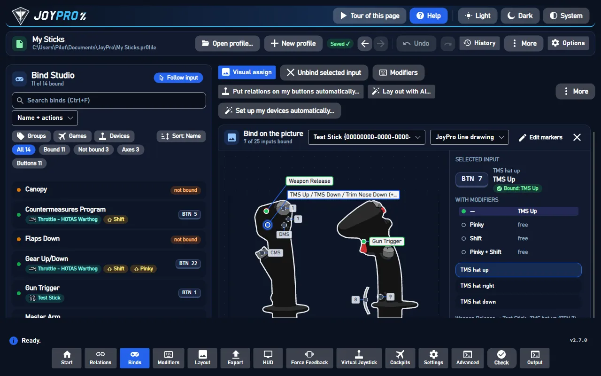

#跟隨輸入
切換按鈕已撰寫工具提示 跟隨輸入：按下按鈕或大幅移動軸，清單就會跳到其關聯；再按一次跳到它上的下一個關聯（先無修飾鍵的）。錄製或輸入文字時不生效。此開關會在下次啟動時保留（「設定 > 綁定」中也有）。
「綁定」頁面會把每個關聯放到一個實體輸入上：您某個裝置的按鈕、帽子開關方向或軸。關聯說明發生 什麼（在每款遊戲和每架飛機中的「Gear Up/Down」）；它的綁定說明您在 哪裡 按下它（「Throttle - HOTAS Warthog，按鈕 22」）。關聯是在 關聯 頁面上建立的；綁定會在您匯出時寫入遊戲（匯出到您的遊戲）。


flowchart LR L["在清單中<br/>選擇一個關聯"] --> R["錄製輸入<br/>（或在圖片上）"] R --> S["立即儲存：<br/>輸入 1，有自己的<br/>修飾鍵和曲線"] S -.-> A["錄製另一個輸入：<br/>輸入 2，有自己的<br/>修飾鍵和曲線"]
這個頁面知道關聯是軸還是按鈕：軸關聯只接受您移動幅度很大的軸，按鈕關聯只接受按鈕、帽子開關或切換開關。標題下方的那一行會說明它在等待什麼（「正在等待：軸」）。
跟隨輸入（預設開啟）的作用正好相反：按下裝置上的任何按鈕，清單就會跳到綁定在它上面的關聯。再按一次同一個按鈕，會跳到它上面的下一個關聯。要回答「這個按鈕在做什麼？」時很方便。在錄製進行中、您正在輸入文字，以及裝置圖片開啟時，它會暫停。


| 方式 | 時間 |
|---|---|
| 錄製輸入 | 一般的方式：按下真正的按鈕 |
| 在圖片上綁定（視覺化指派） | 您會看到畫出來的裝置，每個按鈕上都有一個標記；點一個標記，選擇關聯，然後按 綁定到此 |
| 手動選擇輸入 | 裝置沒有連接，或您想直接輸入輸入名稱（JOY_BTN22、JOY_X） |


沒有關聯時，頁面會顯示 尚無可綁定的項目 和 前往關聯。請先在 開始 頁面匯入遊戲，或先建立關聯。
匯出後，在關聯涵蓋的每架飛機中，遊戲自己的控制選單會在該動作上顯示綁定的按鈕。如果有修飾鍵，DCS 會顯示成修飾鍵組合（例如「JOY_BTN5 + JOY_BTN22」），IL-2 和 Star Citizen 則以它們自己的修飾鍵形式顯示。軸曲線會變成遊戲自己的軸設定（DCS：Axis Tune；IL-2：響應曲線；Star Citizen：該軸的選項），所以您在遊戲中也會看到相同的曲線。


標題工具
所選綁定（右側）：裝置圖片（小）、關聯、裝置、輸入、軸或按鈕、修飾鍵。它的作用 會列出該關聯在各遊戲中的動作（唯讀；在「關聯」中開啟 可以修改它們，移動... 會把一個動作送到另一個按鈕，其餘的留在這裡）。
用您的裝置綁定：錄製輸入、取消錄製、清除輸入（關聯保留修飾鍵和曲線，只移除輸入）、清除修飾鍵。手動選擇輸入：裝置和輸入清單、設定綁定、重新整理選項、清除綁定。錄製設定：逾時（毫秒）、預熱（毫秒）、軸門檻（行程的 %）以及「同時取得放開時保持按下的按鈕」（用於三段開關的中間位置）。
此綁定的修飾鍵：勾選修飾鍵後按 將選取項目附加到綁定 / 將選取項目從綁定取消附加，或建立一個新的（建立修飾鍵：名稱、裝置和輸入或 錄製修飾鍵輸入，反向 用於放開時為「開」的開關）。它的 x 會把它收合成只剩標題列（會記住）；顯示 會再次展開它。
軸回應：曲線、死區、飽和度（僅限軸關聯；選擇軸時會自動展開，一旦您關閉它，下一個軸也會保持關閉），見下文。卡榫模式（有後燃器卡榫的油門），見下文。綁定行為（進階）：反向、滑桿、連按兩下。在所有位置解除輸入綁定（進階）：在整個設定檔中釋放一個實體輸入。


一條預設曲線、每個遊戲一條，或是為您勾選的飛機設定一條。飛機會使用自己的曲線，沒有的話用遊戲的曲線，再沒有就用預設曲線。套用於 會以核取方塊列出它們：
| 列 | 範例 | 用於 |
|---|---|---|
| 預設曲線 | 所有沒有專屬曲線的遊戲和飛機（在 2.6.5 及之前，這一列叫做「所有遊戲」） | |
| 一個遊戲 | DCS、IL-2 Korea | 該遊戲在這個關聯中所有沒有專屬曲線的飛機 |
| 一架飛機（DCS） | AH-64D BLK.II CPG | 僅限該飛機 |
| 一個遊戲系列 | MSFS 系列（MSFS 2024、MSFS 2020） | 兩個遊戲一起；只有當關聯中有其中兩個遊戲（或已儲存該系列的曲線）時才會顯示 |
每一列旁邊會標示它目前使用的曲線：專屬曲線、與 ... 相同（專屬曲線完全相同的飛機）、使用 DCS / 使用預設曲線（沒有專屬曲線；那裡的變更也會影響它）。它的工具提示會用一句話說明同樣的內容。只有 DCS 有每架飛機各自的列：它是唯一按飛機寫入曲線的遊戲。DCS 列指的是列在它下方的這個關聯的 DCS 飛機，而不是整個 DCS；如果它有專屬曲線，會顯示 專屬曲線，用於下方沒有專屬曲線的飛機。
使用虛擬 Xbox 手把的遊戲（ACE COMBAT 8、Hell Let Loose: Vietnam，以及在 虛擬 Joystick 頁面上設為 Xbox 手把的任何遊戲）不會匯出，所以 JoyPro 會自己在手把上套用它們的曲線；面板會以粗體說明這一點。它們的反向設定永遠不會來自 DCS：而是遊戲自己的設定（只勾選該遊戲並儲存），否則就依照遊戲的手把慣例（ACE COMBAT 8 的俯仰預設是反向的）。
開啟關聯時勾選了什麼： 使用 DCS 曲線的飛機（新的關聯：全部飛機）。有專屬曲線的飛機保持未勾選，以免儲存時不小心覆寫它們。如果您之前為這個關聯儲存過，則會改為恢復您上次儲存的列，重新啟動後也一樣，並顯示它們的曲線。
「儲存」會做什麼 寫在按鈕上方：
多架飛機可以一起勾選；其他任何列都只能單獨勾選。逐一勾選飛機時，只要還有一架沒勾，DCS 列就不會自動勾選：勾選一架飛機時，它會得到專屬曲線，即使它是唯一使用 DCS 曲線的飛機。只有當您勾選全部飛機時，DCS 列才會一起勾選。如果勾選的飛機目前的曲線不同，上方那行會說明這一點，並顯示第一架勾選飛機的曲線；不會合併任何東西。目前曲線（按一下即可勾選） 會依共用的曲線把飛機分組（「AH-64D BLK.II CPG、AH-64D BLK.II Pilot、Ka-50 III：曲線相同」、「SA342 Copilot、SA342 Pilot：使用 DCS」）；按一下即可勾選該組。
當顯示的曲線不是自己的曲線時，面板會以藍色顯示曲線，並以橘色虛線顯示預設曲線。每個遊戲都有自己的曲線類型（DCS：死區、飽和度 X/Y、曲率或 11 點使用者曲線；IL-2：自己的靈敏度和死區；X-Plane：自由曲線點），所以右側的滑桿會隨著列而改變。當遊戲退回使用預設曲線時，JoyPro 會在遊戲能表達的範圍內，讓該遊戲的參數盡量貼近預設曲線。
拖曳白色控制點來調整曲線形狀，或使用滑桿。每項設定旁邊還有一個標示範圍的數字方塊：輸入精確的數值，或按 Up / Down（Shift：十步），或在目前的方塊上轉動滑鼠滾輪。超出範圍的數字在您按 Enter 或離開方塊時，會回到最接近的邊界值，方塊下方的文字會說明這一點。使用者曲線 有 11 個數字方塊，每 10 % 的搖桿行程一個（0 % ... 100 %），與曲線上的白色控制點同步。
數字使用各遊戲自己的單位；方塊上方的文字會說明是哪種單位。對 DCS（以及基本曲線）來說，它們和 DCS 自己的軸調整對話方塊相同：死區、飽和度 X/Y 和使用者曲線點為 0 .. 100，曲率為 -100 .. 100，所以死區 8 就輸入 8。您的設定檔和匯出則保留 DCS 檔案中的值（0.08），小數位數較多的值在您修改之前都會保持精確。Falcon BMS 使用啟動器的段位 0 .. 3，FSX 為 0 .. 127，依此類推。
編輯會立即預覽（也會以圓點顯示搖桿的即時位置）；儲存 會在一個步驟中（一次 Ctrl+Z）把它們存到勾選的列。重新使用遊戲的曲線 會移除勾選飛機的專屬曲線（對遊戲而言：重新使用預設曲線），同樣是一個步驟。重新載入 會重新讀取它們。
在卡榫模式下，被卡榫模式彎折的飛機曲線（「使用預設曲線，在卡榫處彎折」）會以遊戲實際收到的樣子顯示，且無法在這裡修改或儲存：為它儲存的曲線會優先於卡榫模式，並為該飛機關閉卡榫模式。若要修改，請勾選 預設曲線（卡榫模式彎折的那條曲線），或修改下方的卡榫設定。
複製到另一個軸... 會在一個步驟中把相同的設定套用到另一個已綁定的軸，例如從 Thrust Left 到 Thrust Right：選擇軸，只有在兩者應該以相同方式反向時才勾選 同時複製反向，然後按 複製。它會套用到另一個軸的相同遊戲或飛機（勾選的項目）；一次 Ctrl+Z 即可撤回。
A throttle with an afterburner detent used to need one throttle relation per afterburner position. In detent mode one throttle relation serves every aircraft: JoyPro bends the curve per aircraft so your throttle's detent is exactly where that aircraft's afterburner starts (F-16C at 77 %, F-14 at 70 %, ...). Resting in the detent stays below the afterburner, also a little past it (the detent band, 2 % of the travel: the yellow strip in the curve); pushing further lights it. A left and a right lever give the same throttle at the same place relative to their own detent, so both engines stay out of the afterburner together. The curve never falls while the lever goes forward, even where the relation's own curve dips.
The aircraft groups below show where each group's afterburner starts and where that number comes from; type your own value and Set, or Game data to go back. No afterburner on a group gives those aircraft full power (or full collective) at your detent. Copy detent mode to another axis... gives the other lever (Thrust Left from Thrust Right) the same detent mode in one step.
在每架匯出的飛機中，油門都正好在您裝置的卡榫處進入後燃器。DCS 會得到每架飛機各自的曲線（死區和飽和度，或使用者曲線），X-Plane 得到曲線點；所有飛機共用一條曲線的遊戲，會得到關聯中多數飛機需要的曲線，其餘的則列在匯出結果中。
一個關聯可以使用多個輸入，每個輸入都有自己的裝置、修飾鍵和軸曲線（同一個握把裝在兩個底座上、第二個開火按鈕）。卡片會顯示 +1（其他輸入列在工具提示中），選取的關聯會有 更多輸入 面板：
匯出時，如果遊戲每個動作可以有多個輸入，就會寫入每個輸入；不行的話，會列出相關的關聯名稱（匯出）。詳細資料和各遊戲的對照表：docs/multi-bind.md。只有一個輸入的關聯完全和以前一樣；不需要開啟任何設定（在 2.6.5 及之前，它位於 設定 > 實驗性）。
每個頁面都能透過任何一個輸入找到關聯：按下第二支搖桿時的 跟隨輸入 和 HUD、配置頁面的圖片和表格、此頁面和關聯頁面的 裝置 篩選、範圍為 全部 的搜尋（「MOZA」會找到有輸入在它上面的關聯）、檢查頁面以及取代/移除裝置。對於有多個輸入的軸，軸回應 區段頂端有一個 輸入 清單：每個輸入都有自己的曲線、死區和飽和度；選擇要調整的那一個（主輸入是輸入 1）。
檢視模型：MainWindowViewModel.cs（綁定清單、錄製、設定/清除、修飾鍵）、MainWindowViewModel.AxisTuning.cs（曲線、使用連結的 engine/AxisTuning.cs 即時預覽）、MainWindowViewModel.AxisTuningAppliesTo.cs（「套用於」的勾選、儲存計畫、群組、記住的勾選）、MainWindowViewModel.Detent.cs、MainWindowViewModel.AutoAssign.cs、MainWindowViewModel.LayoutWithAi.cs、MainWindowViewModel.LayoutWorkspace.cs 和 MainWindowViewModel.VisualAssign.cs（在圖片上綁定）、MainWindowViewModel.LiveInput.cs（跟隨輸入）、MainWindowViewModel.BindPeek.cs（它的作用）、MainWindowViewModel.MoveAction.cs。
從按下 錄製輸入 到儲存綁定：
| # | 誰 | 會發生什麼 |
|---|---|---|
| 1 | 您 | 按 錄製輸入。 |
| 2 | 綁定頁面 | 啟動擷取服務（DirectInput，CaptureNextAsync）：軸或按鈕模式、時間限制、暖身、門檻。 |
| 3 | 您 | 按一個按鈕或移動一個軸。 |
| 4 | 擷取服務 | 回報裝置和輸入（例如 JOY_BTN22）。 |
| 5 | 引擎 | binds set "Gear Up/Down" --device ... --input JOY_BTN22 儲存綁定（設定檔自動儲存、歷史版本）。 |
| 6 | 綁定頁面 | binds list 重新整理卡片。 |
Services/JoystickCaptureService.cs 會輪詢 DirectInput；Services/RecordButtonTracker.cs 只接受狀態轉換，絕不接受錄製開始時就已按下的按鈕（除非勾選了「同時取得放開時保持按下的按鈕」）。類比鍵盤的軸會被忽略，除非在 設定 > 裝置 中允許。詳細資料：即時輸入。engine binds list、engine binds show、engine binds set（裝置、輸入、--inverted、--slider、--curvature、--deadzone、--saturation-x/-y、--double-tap）、engine binds clear（--input-only 用於清除輸入）、engine binds unbind、engine binds import / engine binds export（JSON）。engine binds modifier add、engine binds modifier remove、engine binds modifier list。engine binds tuning show、engine binds tuning set（--scope plane:DCS:F-16C_50 | game:IL2Korea | family:il2 | base、--param key=value、--curve-points）、engine binds tuning clear。依綁定儲存為 TuningOverrides（範圍 -> inv=0;sl=0;dz=0.05;sx=1;sy=1;cv=0.2）。參考：axis-curves。engine binds detent show、engine binds detent set（--on/--off、--no-ab full|linear）、engine binds detent calibrate（--idle --detent [--full] [--cutoff]，依裝置軸儲存）、engine binds detent merge（計畫；--apply 會合併為一個歷程記錄版本）。卡榫資料：DB\Detents\throttle-gates.json。engine devices kb（識別、列出、顯示）、engine relations auto-assign（--dry-run 用於預覽、--explain、--overwrite [--include-missing]、--relation、--max-modifiers、--add-device、--ignore-device）。engine arrange ask、engine arrange apply --proposal、engine arrange prefs。本頁背後的功能文件，從儲存庫產生：
113 個控制項，從程式的原始碼讀取：113 個已撰寫，0 個附有來自原始碼的資訊（工具提示、程式碼註解、引擎呼叫），0 個尚待補充。
工具提示 跟隨輸入：按下按鈕或大幅移動軸，清單就會跳到其關聯；再按一次跳到它上的下一個關聯（先無修飾鍵的）。錄製或輸入文字時不生效。此開關會在下次啟動時保留（「設定 > 綁定」中也有）。
工具提示 只有一個動作移到另一個按鈕；其他動作留在此按鈕上
在設定檔還沒有任何關聯時顯示：開啟「關聯」頁面，您必須先在那裡建立關聯，才能綁定任何東西。
工具提示 在您裝置的圖片上選擇關聯
「視覺化指派」：在編輯器的位置顯示您裝置的圖片，每個按鈕和軸上都有一個標記，讓您在上面選擇關聯；按圖片上的 x 可以再關閉它。
工具提示 將選取綁定的輸入從所有使用它的關聯中移除
工具提示 修飾鍵庫：重新命名、刪除、查看使用位置
開啟「修飾鍵」頁面：也就是修飾鍵庫，您可以在那裡重新命名和刪除修飾鍵，並查看它們用在哪裡。
工具提示 自動指派：JoyPro 會把您的關聯綁定到裝置上合適的控制項（TMS 放在 TMS 帽子開關，起落架放在起落架拉桿）。請先預覽；按「套用」前不會變更任何內容。
工具提示 用您自己的話說出您喜歡的操控方式（throttle and left-hand stick, trim on the hat, curves softer for helis）；JoyPro 會配置綁定、曲線、力回饋和 vJoy，並在套用任何內容之前顯示每項變更。
開啟或關閉「綁定」頁面上的「用 AI 配置」，並讀取此設定檔保留的偏好。
說出您喜歡怎樣的操控方式；在套用任何東西之前，JoyPro 會顯示對綁定、曲線、力回饋和 vJoy 的每項變更。
工具提示 設定精靈：一次為您所監看的遊戲建立關聯與綁定（裝置角色、飛機優先順序、修飾鍵、功能位置），變更前會先讓您檢閱
工具提示 重新整理、匯入與匯出綁定、儲存
開啟「更多」功能表：重新整理綁定、在「輸出」面板顯示所選綁定、取代所選綁定的裝置、以 JSON 匯入或匯出綁定、儲存和合併設定檔。
工具提示 把該裝置的所有綁定逐個輸入地移到另一個裝置，並附預覽
立刻儲存設定檔。JoyPro 在每次變更後都會自動儲存；這會立刻寫入待處理的編輯，並再次寫入檔案。
「用 AI 配置」：把這個範例加到您的文字中；請在「預覽」前修改它。
工具提示 與設定精靈相同：為您的遊戲中設定檔裡沒有的重要功能建立關聯，並與其餘關聯一起放置
工具提示 顯示 JoyPro 理解的內容和每項變更；目前不會變更任何內容
工具提示 將勾選的變更作為一個步驟套用（復原會全部還原）
在「用 AI 配置」中按「套用」後顯示：用一個步驟把整個已套用的配置復原。
工具提示 捨棄此預覽；不變更任何內容
工具提示 忘記此設定檔中儲存的所有偏好
工具提示 忘記此偏好
「用 AI 配置」：「忘記」會移除這一項偏好，並捨棄顯示的預覽；再按一次「預覽」可取得新的預覽。
「用 AI 配置」：勾選或取消勾選預覽中此群組的每項變更；只有勾選的變更會被套用。
清單中單一項目的勾選框：在「用 AI 配置」中是一項提議的變更；在「此綁定的修飾鍵」的修飾鍵清單中是一個要加上、拿掉或刪除的修飾鍵。
工具提示 依裝置目錄辨識已連接的裝置
工具提示 不為此裝置指派任何內容
「自動指派」：「略過」會把這個裝置排除在外，所以不會指派任何東西給它。
工具提示 JoyPro 對此裝置每個輸入所知的資訊（裝置目錄）
把選取的目錄裝置當作尚未連接的裝置加入「自動指派」：它的綁定會放在一個暫代裝置上，等真正的裝置插上後，您再把暫代裝置換成它。
工具提示 JoyPro 對所選目錄裝置每個輸入所知的資訊
關閉由「配置」/「顯示配置」顯示的裝置配置圖。
把加入的目錄裝置再從「自動指派」中拿掉；不會在它上面放任何東西。
工具提示 關聯會回到先前所在的控制項（即使裝置取得新 ID 亦然）
工具提示 重新配置這些裝置上的綁定；鍵盤、vJoy 與未連接的裝置不受影響
工具提示 僅指派清單中選取的關聯；其他關聯保留其綁定，其控制項仍視為已佔用
工具提示 選取的關聯為何取得該控制項：顯示最佳候選項、其分數及佔用者（僅為預覽，不會變更任何內容）
工具提示 在配置頁面開啟此圖片：將標記移到實際部件上、使用您的照片、標記助手
「視覺化指派」：「編輯標記」會在「配置」頁面以標記編輯模式開啟此裝置：把標記移到實際的部件上，使用您自己的照片或標記助手。
工具提示 旋轉裝置（拖曳；滾輪縮放；按兩下重設）；將關聯拖放到部件上即可綁定
工具提示 將左側（或清單中）選取的關聯綁定到此輸入
工具提示 在關聯編輯器中開啟此關聯，以變更其動作
功能：「在『關聯』中開啟」會在「關聯」頁面的關聯編輯器中開啟此關聯，您可以在那裡變更它的動作。
功能：動作的飛機數量會顯示或隱藏其飛機的名稱。
工具提示 只有一個動作移到另一個按鈕；其他動作留在此按鈕上
停止正在進行的「錄製」；不會綁定任何東西。
工具提示 將輸入從此關聯移除
重新讀取已連接的裝置和它們的輸入，並重新填入裝置和輸入清單，例如在您插上搖桿之後。
工具提示 「錄製」只取得狀態會改變的按鈕。錄製開始時已按下的按鈕（三段開關的中間位、模式開關）永遠不會被計入；勾選後，放開會被計為該按鈕。
工具提示 此輸入成為主輸入；主輸入移到它的位置。每個動作只保留一個輸入的遊戲會使用主輸入。
工具提示 上方「手動選擇輸入」中的裝置和輸入將成為此關聯的另一個輸入
「新增手動選擇的輸入」：把上方選擇器中選的裝置和輸入，加為所選關聯的另一個輸入，適用於很難錄製的輸入。
「重新整理選項」：根據設定檔中綁定的裝置和輸入選擇器中的裝置，重新建立兩份裝置清單，例如在新增綁定之後。
開啟「修飾鍵」頁面：設定檔的每個修飾鍵、它用在哪裡、重新命名和刪除。
工具提示 再次顯示此綁定的修飾鍵
在已收合的「此綁定的修飾鍵」列上按「顯示」：再次開啟綁定的修飾鍵清單。
把勾選的修飾鍵從所選的綁定上拿掉；修飾鍵本身仍留在設定檔中。
重新讀取設定檔的修飾鍵和綁定，並重新整理修飾鍵清單。
讓新的修飾鍵反向：放開它的輸入時，才算是按住。
取消勾選清單中的所有修飾鍵。
從設定檔重新讀取所選軸關聯的曲線，並捨棄面板中尚未儲存的編輯。
軸回應，「套用於」：勾選顯示的曲線要儲存到哪裡。
工具提示 遊戲的回應曲線，可有任意數量的點：x = 軸行程，y = 輸出，均為 0..1，x 遞增
工具提示 在最寬間隔的中間新增一個點
工具提示 關閉：另一個軸保留自己的反向設定（左右兩側常常不同）
「複製到另一個軸」中的「同時複製反向」：關閉時，另一個軸保留它自己的反向設定；開啟時，它也會取得這個軸的反向設定。
工具提示 一步操作：Ctrl+Z 可復原
「複製到另一個軸」中的「複製」：用一個步驟把設定寫到所選的軸，也就是用相同的 --scopes 為另一個關聯執行 binds tuning set。
按一次 Ctrl+Z 就能復原；這個軸會保留它的數值。
工具提示 沒有後燃器的飛機在卡榫之後沒有任何內容，所以在卡榫處就達到全推力；否則最後一段您得推過卡榫。關閉：其曲線涵蓋整個行程。
工具提示 把油門移到怠速、卡榫和全開；JoyPro 會即時讀取裝置。儲存在此裝置軸上，適用於該軸上的每個油門關聯。
工具提示 同一裝置軸上依飛機劃分的油門關聯會合併為卡榫模式下的一個關聯（先預覽，之後可復原）。
工具提示 一步讓另一個已綁定的油門軸獲得相同的卡榫模式：開/關、無後燃器飛機的規則以及你自己的後燃器數值（例如 Thrust Right 到 Thrust Left）。
工具提示 僅當另一個軸還沒有校正時。左右推桿的卡榫很少完全在同一位置：之後請再校正另一支，以取得準確的卡榫。
「在你校正之前，在那裡使用這個軸的校正」：校正屬於裝置軸，所以第二支推桿需要自己的校正。
勾選後，另一個軸在沒有自己的校正時會借用這個軸的校正；之後請在那個軸上執行「校正卡榫...」，以取得它準確的卡榫。
工具提示 一步操作：Ctrl+Z 可復原
重新讀取關聯的卡榫設定、校正和飛機群組。
校正：略過這個選擇性的步驟。
校正：回到上一步，重新記錄那個位置。
關閉校正而不儲存；舊的校正會保留。
把設定檔還原到進行合併時的版本：油門關聯會恢復成原來的樣子。
關閉合併小幫手；已經完成的合併會保留。
工具提示 此群組的每架飛機都採用這個後燃器起點；留空 = 遊戲資料。
工具提示 恢復為 JoyPro 遊戲資料中這些飛機的後燃器起點。
卡榫模式，飛機群組：「遊戲資料」會移除您為這些飛機自訂的後燃器數值；它們會改用 JoyPro 遊戲資料中的起點。
工具提示 這些飛機沒有後燃器（直升機、螺旋槳飛機、沒有後燃器的噴射機）：在你裝置的卡榫處全推力，或總距桿全開。
把綁定標記為連按兩下。只保存在設定檔中；可當作速查表的備註，也可用於虛擬功能。